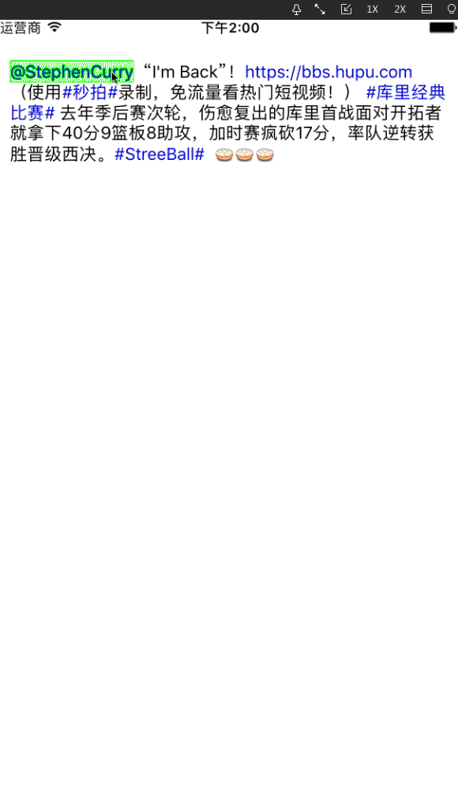

<!DOCTYPE html>
<html>
<head><meta name="generator" content="Hexo 3.8.0">
  <meta charset="utf-8">
  

  
  <title>iOS开发 — 自定义可交互的 UITextView | TanZoooou的博客</title>
  <meta name="viewport" content="width=device-width, initial-scale=1, maximum-scale=1">
  <meta name="description" content="#前言 最近有个项目需要做一个可以对 UITextView 内容进行交互的功能，因此做了一个类似新浪微博，可以展示 Emoji 、@somebody 、#话题# 以及链接的 Demo 。实现点击特殊字段的文字，并得到一个相应的响应。">
<meta name="keywords" content="UITextView,图文混排">
<meta property="og:type" content="article">
<meta property="og:title" content="iOS开发 — 自定义可交互的 UITextView">
<meta property="og:url" content="http://yoursite.com/2017/11/29/iOS-interactiveTextView/index.html">
<meta property="og:site_name" content="TanZoooou的博客">
<meta property="og:description" content="#前言 最近有个项目需要做一个可以对 UITextView 内容进行交互的功能，因此做了一个类似新浪微博，可以展示 Emoji 、@somebody 、#话题# 以及链接的 Demo 。实现点击特殊字段的文字，并得到一个相应的响应。">
<meta property="og:locale" content="default">
<meta property="og:image" content="http://yoursite.com/2017/11/29/iOS-interactiveTextView/show.gif">
<meta property="og:image" content="http://yoursite.com/2017/11/29/iOS-interactiveTextView/setArc.png">
<meta property="og:image" content="http://yoursite.com/2017/11/29/iOS-interactiveTextView/lib.png">
<meta property="og:updated_time" content="2019-05-03T14:59:19.514Z">
<meta name="twitter:card" content="summary">
<meta name="twitter:title" content="iOS开发 — 自定义可交互的 UITextView">
<meta name="twitter:description" content="#前言 最近有个项目需要做一个可以对 UITextView 内容进行交互的功能，因此做了一个类似新浪微博，可以展示 Emoji 、@somebody 、#话题# 以及链接的 Demo 。实现点击特殊字段的文字，并得到一个相应的响应。">
<meta name="twitter:image" content="http://yoursite.com/2017/11/29/iOS-interactiveTextView/show.gif">
  
    <link rel="alternate" href="/atom.xml" title="TanZoooou的博客" type="application/atom+xml">
  
  
    <link rel="icon" href="/favicon.png">
  
  
    <link href="//fonts.googleapis.com/css?family=Source+Code+Pro" rel="stylesheet" type="text/css">
  
  <link rel="stylesheet" href="/css/style.css">
</head>
</html>
<body>
  <div id="container">
    <div id="wrap">
      <header id="header">
  <div id="banner"></div>
  <div id="header-outer" class="outer">
    <div id="header-title" class="inner">
      <h1 id="logo-wrap">
        <a href="/" id="logo">TanZoooou的博客</a>
      </h1>
      
    </div>
    <div id="header-inner" class="inner">
      <nav id="main-nav">
        <a id="main-nav-toggle" class="nav-icon"></a>
        
          <a class="main-nav-link" href="/">Home</a>
        
          <a class="main-nav-link" href="/archives">Archives</a>
        
      </nav>
      <nav id="sub-nav">
        
          <a id="nav-rss-link" class="nav-icon" href="/atom.xml" title="RSS Feed"></a>
        
        <a id="nav-search-btn" class="nav-icon" title="Search"></a>
      </nav>
      <div id="search-form-wrap">
        <form action="//google.com/search" method="get" accept-charset="UTF-8" class="search-form"><input type="search" name="q" class="search-form-input" placeholder="Search"><button type="submit" class="search-form-submit">&#xF002;</button><input type="hidden" name="sitesearch" value="http://yoursite.com"></form>
      </div>
    </div>
  </div>
</header>
      <div class="outer">
        <section id="main"><article id="post-iOS-interactiveTextView" class="article article-type-post" itemscope itemprop="blogPost">
  <div class="article-meta">
    <a href="/2017/11/29/iOS-interactiveTextView/" class="article-date">
  <time datetime="2017-11-29T03:42:50.000Z" itemprop="datePublished">2017-11-29</time>
</a>
    
  <div class="article-category">
    <a class="article-category-link" href="/categories/经验总结/">经验总结</a>
  </div>

  </div>
  <div class="article-inner">
    
    
      <header class="article-header">
        
  
    <h1 class="article-title" itemprop="name">
      iOS开发 — 自定义可交互的 UITextView
    </h1>
  

      </header>
    
    <div class="article-entry" itemprop="articleBody">
      
        <p>#前言</p>
<p>最近有个项目需要做一个可以对 <code>UITextView</code> 内容进行交互的功能，因此做了一个类似新浪微博，可以展示 <code>Emoji</code> 、<code>@somebody</code> 、<code>#话题#</code> 以及<code>链接</code>的 Demo 。实现点击特殊字段的文字，并得到一个相应的响应。</p>
<a id="more"></a>
<h2 id="效果图"><a href="#效果图" class="headerlink" title="效果图"></a>效果图</h2><p></p>
<h1 id="一、Demo-结构"><a href="#一、Demo-结构" class="headerlink" title="一、Demo 结构"></a>一、Demo 结构</h1><p>通过创建自定义的 <code>TZStatusTextView</code> 展示带有属性的特殊字段内容：如<code>链接</code>、<code>Emoji</code>、<code>话题</code>以及 <code>@somebody</code> 等等。</p>
<p>1、自定义 <code>UITextView (TZStatusTextView)</code></p>
<p>2、model: <code>TZSpecialPart（特殊字段）</code>、<code>TZStatus（正文内容）</code>、 <code>TZTextPart（字段内容）</code></p>
<p>3、tool（Emoji工具）: <code>TZEmojiTool</code>、<code>TZEmoji</code></p>
<h1 id="二、主要代码解读"><a href="#二、主要代码解读" class="headerlink" title="二、主要代码解读"></a>二、主要代码解读</h1><p>Demo 中展示的内容(截取一段微博正文):<br><code>@StephenCurry  &quot;I&#39;m Back&quot;！ https://bbs.hupu.com （使用#秒拍#录制，免流量看热门短视频！） #库里经典比# 去年季后赛次轮，伤愈复出的库里首战面对开拓者就拿下40分9篮板8助攻，加时赛疯砍17分，率队逆转获胜晋级西决。#StreeBall#  [吃元宵][吃元宵][吃元宵]。</code></p>
<h2 id="2-1-实例化展示内容"><a href="#2-1-实例化展示内容" class="headerlink" title="2.1 实例化展示内容"></a>2.1 实例化展示内容</h2><figure class="highlight objc"><table><tr><td class="gutter"><pre><span class="line">1</span><br><span class="line">2</span><br><span class="line">3</span><br><span class="line">4</span><br><span class="line">5</span><br><span class="line">6</span><br><span class="line">7</span><br><span class="line">8</span><br><span class="line">9</span><br><span class="line">10</span><br><span class="line">11</span><br><span class="line">12</span><br><span class="line">13</span><br><span class="line">14</span><br><span class="line">15</span><br><span class="line">16</span><br><span class="line">17</span><br><span class="line">18</span><br><span class="line">19</span><br><span class="line">20</span><br><span class="line">21</span><br><span class="line">22</span><br><span class="line">23</span><br><span class="line">24</span><br><span class="line">25</span><br><span class="line">26</span><br><span class="line">27</span><br><span class="line">28</span><br><span class="line">29</span><br><span class="line">30</span><br><span class="line">31</span><br><span class="line">32</span><br></pre></td><td class="code"><pre><span class="line"></span><br><span class="line"><span class="comment">// TZStatus.h</span></span><br><span class="line"><span class="comment">/** 正文内容 */</span></span><br><span class="line"><span class="keyword">@property</span> (<span class="keyword">copy</span>, <span class="keyword">nonatomic</span>) <span class="built_in">NSString</span> *contentText;</span><br><span class="line"></span><br><span class="line"><span class="comment">/** 带属性的微博信息内容 */</span></span><br><span class="line"><span class="keyword">@property</span> (<span class="keyword">strong</span>, <span class="keyword">nonatomic</span>) <span class="built_in">NSAttributedString</span> *attributedText;</span><br><span class="line"></span><br><span class="line"></span><br><span class="line"><span class="comment">// TZTextPart.h</span></span><br><span class="line"><span class="comment">/** 文字段内容 */</span></span><br><span class="line"><span class="keyword">@property</span> (<span class="keyword">strong</span>, <span class="keyword">nonatomic</span>) <span class="built_in">NSString</span> *partText;</span><br><span class="line"></span><br><span class="line"><span class="comment">/** 文字段范围 */</span></span><br><span class="line"><span class="keyword">@property</span> (<span class="keyword">assign</span>, <span class="keyword">nonatomic</span>) <span class="built_in">NSRange</span> range;</span><br><span class="line"></span><br><span class="line"><span class="comment">/** 是否是特殊文字 */</span></span><br><span class="line"><span class="keyword">@property</span> (<span class="keyword">assign</span>, <span class="keyword">nonatomic</span>, <span class="keyword">getter</span>=isSpecial) <span class="built_in">BOOL</span> special;</span><br><span class="line"></span><br><span class="line"><span class="comment">/** 是否是表情文字 */</span></span><br><span class="line"><span class="keyword">@property</span> (<span class="keyword">assign</span>, <span class="keyword">nonatomic</span>, <span class="keyword">getter</span>=isEmoji) <span class="built_in">BOOL</span> emoji;</span><br><span class="line"></span><br><span class="line"></span><br><span class="line"><span class="comment">// TZSpecialPart.h</span></span><br><span class="line"><span class="comment">/** 特殊段内容 */</span></span><br><span class="line"><span class="keyword">@property</span> (<span class="keyword">strong</span>, <span class="keyword">nonatomic</span>) <span class="built_in">NSString</span> *specialText;</span><br><span class="line"></span><br><span class="line"><span class="comment">/** 特殊段范围 */</span></span><br><span class="line"><span class="keyword">@property</span> (<span class="keyword">assign</span>, <span class="keyword">nonatomic</span>) <span class="built_in">NSRange</span> specialRange;</span><br><span class="line"></span><br><span class="line"><span class="comment">/** 特殊文字的矩形框 数组 */</span></span><br><span class="line"><span class="keyword">@property</span> (<span class="keyword">strong</span>, <span class="keyword">nonatomic</span>) <span class="built_in">NSArray</span> *rects;</span><br></pre></td></tr></table></figure>
<p>通过正则表达将 <code>NSString</code> 中的 <code>emoji</code>、<code>@somebody</code>、<code>#话题#</code>、<code>链接</code>、<code>普通字段</code> 区分开，并拼接成 <code>NSAttributedString</code>:</p>
<figure class="highlight objc"><table><tr><td class="gutter"><pre><span class="line">1</span><br><span class="line">2</span><br><span class="line">3</span><br><span class="line">4</span><br><span class="line">5</span><br><span class="line">6</span><br><span class="line">7</span><br><span class="line">8</span><br><span class="line">9</span><br><span class="line">10</span><br><span class="line">11</span><br><span class="line">12</span><br><span class="line">13</span><br><span class="line">14</span><br><span class="line">15</span><br><span class="line">16</span><br><span class="line">17</span><br><span class="line">18</span><br><span class="line">19</span><br><span class="line">20</span><br><span class="line">21</span><br><span class="line">22</span><br><span class="line">23</span><br><span class="line">24</span><br><span class="line">25</span><br><span class="line">26</span><br><span class="line">27</span><br><span class="line">28</span><br><span class="line">29</span><br><span class="line">30</span><br><span class="line">31</span><br><span class="line">32</span><br><span class="line">33</span><br><span class="line">34</span><br><span class="line">35</span><br><span class="line">36</span><br><span class="line">37</span><br><span class="line">38</span><br><span class="line">39</span><br><span class="line">40</span><br><span class="line">41</span><br><span class="line">42</span><br><span class="line">43</span><br><span class="line">44</span><br><span class="line">45</span><br><span class="line">46</span><br><span class="line">47</span><br><span class="line">48</span><br><span class="line">49</span><br><span class="line">50</span><br><span class="line">51</span><br><span class="line">52</span><br><span class="line">53</span><br><span class="line">54</span><br><span class="line">55</span><br><span class="line">56</span><br><span class="line">57</span><br><span class="line">58</span><br><span class="line">59</span><br><span class="line">60</span><br><span class="line">61</span><br><span class="line">62</span><br><span class="line">63</span><br><span class="line">64</span><br><span class="line">65</span><br><span class="line">66</span><br><span class="line">67</span><br><span class="line">68</span><br><span class="line">69</span><br><span class="line">70</span><br><span class="line">71</span><br><span class="line">72</span><br><span class="line">73</span><br><span class="line">74</span><br><span class="line">75</span><br><span class="line">76</span><br><span class="line">77</span><br><span class="line">78</span><br><span class="line">79</span><br><span class="line">80</span><br><span class="line">81</span><br><span class="line">82</span><br><span class="line">83</span><br><span class="line">84</span><br><span class="line">85</span><br><span class="line">86</span><br><span class="line">87</span><br><span class="line">88</span><br><span class="line">89</span><br><span class="line">90</span><br><span class="line">91</span><br><span class="line">92</span><br><span class="line">93</span><br><span class="line">94</span><br><span class="line">95</span><br><span class="line">96</span><br><span class="line">97</span><br><span class="line">98</span><br><span class="line">99</span><br><span class="line">100</span><br><span class="line">101</span><br><span class="line">102</span><br><span class="line">103</span><br><span class="line">104</span><br><span class="line">105</span><br></pre></td><td class="code"><pre><span class="line"></span><br><span class="line">- (<span class="built_in">NSAttributedString</span> *)attributedTextWithText:(<span class="built_in">NSString</span> *)contentText &#123;</span><br><span class="line">   </span><br><span class="line"><span class="comment">//    利用tex生成attributedText</span></span><br><span class="line">    <span class="built_in">NSMutableAttributedString</span> *attributedText = [[<span class="built_in">NSMutableAttributedString</span> alloc] init];</span><br><span class="line">    </span><br><span class="line"><span class="comment">//    1.RegexKitLite正则表达方法</span></span><br><span class="line"><span class="comment">//     表情的规则</span></span><br><span class="line">    <span class="built_in">NSString</span> *emojiPattern = <span class="string">@"\\[[0-9a-zA-Z\\u4e00-\\u9fa5]+\\]"</span>;</span><br><span class="line"><span class="comment">//     @的规则</span></span><br><span class="line">    <span class="built_in">NSString</span> *atPattern = <span class="string">@"@[0-9a-zA-Z\\u4e00-\\u9fa5_-]+"</span>;</span><br><span class="line"><span class="comment">//     #话题#的规则</span></span><br><span class="line">    <span class="built_in">NSString</span> *topicPattern = <span class="string">@"#[0-9a-zA-Z\\u4e00-\\u9fa5]+#"</span>;</span><br><span class="line"><span class="comment">//     url链接的规则</span></span><br><span class="line">    <span class="built_in">NSString</span> *urlPattern = <span class="string">@"\\b(([\\w-]+://?|www[.])[^\\s()&lt;&gt;]+(?:\\([\\w\\d]+\\)|([^[:punct:]\\s]|/)))"</span>;</span><br><span class="line">    <span class="built_in">NSString</span> *pattern = [<span class="built_in">NSString</span> stringWithFormat:<span class="string">@"%@|%@|%@|%@"</span>, emojiPattern, atPattern, topicPattern, urlPattern];</span><br><span class="line">    </span><br><span class="line"><span class="comment">//    各种文字段的内容</span></span><br><span class="line">    <span class="built_in">NSMutableArray</span> *parts = [<span class="built_in">NSMutableArray</span> array];</span><br><span class="line">    </span><br><span class="line"><span class="comment">//    2.遍历所有内容 选出特殊字段内容</span></span><br><span class="line">    [contentText enumerateStringsMatchedByRegex:pattern usingBlock:^(<span class="built_in">NSInteger</span> captureCount, <span class="built_in">NSString</span> *<span class="keyword">const</span> __<span class="keyword">unsafe_unretained</span> *capturedStrings, <span class="keyword">const</span> <span class="built_in">NSRange</span> *capturedRanges, <span class="keyword">volatile</span> <span class="built_in">BOOL</span> *<span class="keyword">const</span> stop) &#123;</span><br><span class="line">        </span><br><span class="line"><span class="comment">//        没有匹配的字段</span></span><br><span class="line">        <span class="keyword">if</span> ((*capturedRanges).length == <span class="number">0</span>) <span class="keyword">return</span>;</span><br><span class="line">        </span><br><span class="line"><span class="comment">//        收集特殊字段</span></span><br><span class="line">        TZTextPart *part = [[TZTextPart alloc] init];</span><br><span class="line">        part.partText = *capturedStrings;</span><br><span class="line">        part.range = *capturedRanges;</span><br><span class="line">        part.special = <span class="literal">YES</span>;</span><br><span class="line">        part.emoji = [part.partText hasPrefix:<span class="string">@"["</span>] &amp;&amp; [part.partText hasSuffix:<span class="string">@"]"</span>];</span><br><span class="line">        </span><br><span class="line">        [parts addObject:part];</span><br><span class="line">        </span><br><span class="line">    &#125;];</span><br><span class="line">    </span><br><span class="line"><span class="comment">//     3.遍历所有内容 选出普通字段内容</span></span><br><span class="line">    [contentText enumerateStringsSeparatedByRegex:pattern usingBlock:^(<span class="built_in">NSInteger</span> captureCount, <span class="built_in">NSString</span> *<span class="keyword">const</span> __<span class="keyword">unsafe_unretained</span> *capturedStrings, <span class="keyword">const</span> <span class="built_in">NSRange</span> *capturedRanges, <span class="keyword">volatile</span> <span class="built_in">BOOL</span> *<span class="keyword">const</span> stop) &#123;</span><br><span class="line">        <span class="comment">//        没有匹配的字段</span></span><br><span class="line">        <span class="keyword">if</span> ((*capturedRanges).length == <span class="number">0</span>) <span class="keyword">return</span>;</span><br><span class="line">        </span><br><span class="line">        <span class="comment">//        收集普通字段</span></span><br><span class="line">        TZTextPart *part = [[TZTextPart alloc] init];</span><br><span class="line">        part.partText = *capturedStrings;</span><br><span class="line">        part.range = *capturedRanges;</span><br><span class="line">        </span><br><span class="line">        [parts addObject:part];</span><br><span class="line">    &#125;];</span><br><span class="line">    </span><br><span class="line"><span class="comment">//     4.将获得的所有字段按 range 排序</span></span><br><span class="line">    [parts sortUsingComparator:^<span class="built_in">NSComparisonResult</span>(TZTextPart  *_Nonnull part1, TZTextPart *_Nonnull part2) &#123;<span class="comment">//升序排列</span></span><br><span class="line">        </span><br><span class="line">        <span class="keyword">if</span> (part1.range.location &gt; part2.range.location) &#123;</span><br><span class="line"></span><br><span class="line">            <span class="keyword">return</span> <span class="built_in">NSOrderedDescending</span>;</span><br><span class="line">        &#125;</span><br><span class="line">        <span class="keyword">return</span> <span class="built_in">NSOrderedAscending</span>;</span><br><span class="line">    &#125;];</span><br><span class="line">    </span><br><span class="line">     <span class="built_in">UIFont</span> *font = [<span class="built_in">UIFont</span> systemFontOfSize:<span class="number">15.0</span>];</span><br><span class="line">    </span><br><span class="line"><span class="comment">//      储存特殊属性数组</span></span><br><span class="line">    <span class="built_in">NSMutableArray</span> *specials = [<span class="built_in">NSMutableArray</span> array];</span><br><span class="line">    </span><br><span class="line"><span class="comment">//     5.分别处理各文字段 设置内容的属性</span></span><br><span class="line">    <span class="keyword">for</span> (TZTextPart *part <span class="keyword">in</span> parts) &#123;</span><br><span class="line">        <span class="built_in">NSAttributedString</span> *substr = <span class="literal">nil</span>;</span><br><span class="line">        </span><br><span class="line">        <span class="keyword">if</span> (part.isEmoji) &#123;<span class="comment">//表情</span></span><br><span class="line">            <span class="built_in">NSTextAttachment</span> *attch = [[<span class="built_in">NSTextAttachment</span> alloc] init];</span><br><span class="line">            <span class="built_in">NSString</span> *name = [TZEmojiTool emojiWithChs:part.partText].png;</span><br><span class="line">            <span class="keyword">if</span> (name) &#123; <span class="comment">// 能找到对应的图片</span></span><br><span class="line">                attch.image = [<span class="built_in">UIImage</span> imageNamed:name];</span><br><span class="line">                attch.bounds = <span class="built_in">CGRectMake</span>(<span class="number">0</span>, <span class="number">-3</span>, font.lineHeight, font.lineHeight);</span><br><span class="line">                substr = [<span class="built_in">NSAttributedString</span> attributedStringWithAttachment:attch];</span><br><span class="line">            &#125; <span class="keyword">else</span> &#123; <span class="comment">// 表情图片不存在</span></span><br><span class="line">                substr = [[<span class="built_in">NSAttributedString</span> alloc] initWithString:part.partText];</span><br><span class="line">            &#125;</span><br><span class="line">        &#125;<span class="keyword">else</span> <span class="keyword">if</span> (part.special)&#123;<span class="comment">//特殊文字</span></span><br><span class="line">            substr = [[<span class="built_in">NSAttributedString</span> alloc] initWithString:part.partText attributes:@&#123;</span><br><span class="line">                                                                                           <span class="built_in">NSForegroundColorAttributeName</span>:[<span class="built_in">UIColor</span> blueColor]</span><br><span class="line">                                                                                           &#125;];</span><br><span class="line"><span class="comment">//            将特殊文字段的 内容 和 位置 保存起来</span></span><br><span class="line">            TZSpecialPart *specialPart = [[TZSpecialPart alloc] init];</span><br><span class="line">            specialPart.specialText = part.partText;</span><br><span class="line">            <span class="built_in">NSUInteger</span> loc = part.range.location;</span><br><span class="line">            <span class="built_in">NSUInteger</span> len = part.range.length;</span><br><span class="line">            specialPart.specialRange = <span class="built_in">NSMakeRange</span>(loc, len);</span><br><span class="line">            </span><br><span class="line">            [specials addObject:specialPart];</span><br><span class="line">            </span><br><span class="line">        &#125; <span class="keyword">else</span> &#123;<span class="comment">//非特殊文字</span></span><br><span class="line">            substr = [[<span class="built_in">NSAttributedString</span> alloc] initWithString:part.partText];</span><br><span class="line">        &#125;</span><br><span class="line">        </span><br><span class="line">        [attributedText appendAttributedString:substr];</span><br><span class="line">    &#125;</span><br><span class="line">    [attributedText addAttribute:<span class="built_in">NSFontAttributeName</span> value:font range:<span class="built_in">NSMakeRange</span>(<span class="number">0</span>, attributedText.length)];</span><br><span class="line">    </span><br><span class="line"><span class="comment">//    把specials 添加到  0，1 的位置上（第一个字符的属性上）</span></span><br><span class="line">    [attributedText addAttribute:<span class="string">@"specials"</span> value:specials range:<span class="built_in">NSMakeRange</span>(<span class="number">0</span>, <span class="number">1</span>)];</span><br><span class="line">    </span><br><span class="line">    <span class="keyword">return</span> attributedText;</span><br><span class="line">&#125;</span><br></pre></td></tr></table></figure>
<p>此时已经将正文中的特殊字段 <code>(@、##、链接、emoji)</code> 分别截取出来，并保存在 <code>attributedText</code> 的 <code>special</code> 属性中。我们将 <code>tatus</code> 实例中的 <code>attributedText</code> 赋值给 <code>TZTextView</code>。</p>
<h2 id="2-2-在-TZTextView-中创建特殊字段矩形框"><a href="#2-2-在-TZTextView-中创建特殊字段矩形框" class="headerlink" title="2.2 在 TZTextView 中创建特殊字段矩形框"></a>2.2 在 <code>TZTextView</code> 中创建特殊字段矩形框</h2><p>为了实现点击特殊字段响应事件，我们需要创建出特殊字段所在的所有矩形框。（当触摸点位于在这些矩形框上，我们就可以将特殊字段高亮处理，实现点击事件）。</p>
<h3 id="注意-这里需要获取的是矩形框数组，因为特殊字段可能会分行显示，我们需要对分行的两部分都实现相同的点击事件！！！"><a href="#注意-这里需要获取的是矩形框数组，因为特殊字段可能会分行显示，我们需要对分行的两部分都实现相同的点击事件！！！" class="headerlink" title="注意:这里需要获取的是矩形框数组，因为特殊字段可能会分行显示，我们需要对分行的两部分都实现相同的点击事件！！！"></a>注意:这里需要获取的是矩形框数组，因为特殊字段可能会分行显示，我们需要对分行的两部分都实现相同的点击事件！！！</h3><figure class="highlight objc"><table><tr><td class="gutter"><pre><span class="line">1</span><br><span class="line">2</span><br><span class="line">3</span><br><span class="line">4</span><br><span class="line">5</span><br><span class="line">6</span><br><span class="line">7</span><br><span class="line">8</span><br><span class="line">9</span><br><span class="line">10</span><br><span class="line">11</span><br><span class="line">12</span><br><span class="line">13</span><br><span class="line">14</span><br><span class="line">15</span><br><span class="line">16</span><br><span class="line">17</span><br><span class="line">18</span><br><span class="line">19</span><br><span class="line">20</span><br><span class="line">21</span><br><span class="line">22</span><br><span class="line">23</span><br><span class="line">24</span><br><span class="line">25</span><br><span class="line">26</span><br><span class="line">27</span><br></pre></td><td class="code"><pre><span class="line"><span class="comment">/**</span></span><br><span class="line"><span class="comment"> *  初始化特殊字段的矩形框</span></span><br><span class="line"><span class="comment"> */</span></span><br><span class="line">- (<span class="keyword">void</span>)setupSpecialRects &#123;</span><br><span class="line"><span class="comment">//    取出位于attributedText 中 （0，1）位置上的 specials</span></span><br><span class="line">    <span class="built_in">NSArray</span> *specials = [<span class="keyword">self</span>.attributedText attribute:<span class="string">@"specials"</span> atIndex:<span class="number">0</span> effectiveRange:<span class="literal">nil</span>];</span><br><span class="line">    </span><br><span class="line">    <span class="keyword">for</span> (TZSpecialPart *specialPart <span class="keyword">in</span> specials) &#123;</span><br><span class="line"><span class="comment">//        将特殊文字范围 赋值 给选中范围</span></span><br><span class="line">        <span class="keyword">self</span>.selectedRange = specialPart.specialRange;</span><br><span class="line"><span class="comment">//        selectedRange =&gt; 影响 selectedTextRange 通过selectedTextRange 获取特殊文字所在的矩形框</span></span><br><span class="line">        <span class="built_in">NSArray</span> *Rects = [<span class="keyword">self</span> selectionRectsForRange:<span class="keyword">self</span>.selectedTextRange];</span><br><span class="line">        </span><br><span class="line"><span class="comment">//         取消选中文字</span></span><br><span class="line">        <span class="keyword">self</span>.selectedRange = <span class="built_in">NSMakeRange</span>(<span class="number">0</span>, <span class="number">0</span>);</span><br><span class="line">        </span><br><span class="line"><span class="comment">//        得到特殊部分矩形框</span></span><br><span class="line">        <span class="built_in">NSMutableArray</span> *rects = [<span class="built_in">NSMutableArray</span> array];</span><br><span class="line">        <span class="keyword">for</span> (<span class="built_in">UITextSelectionRect</span> *selectionRect <span class="keyword">in</span> Rects) &#123;</span><br><span class="line">            <span class="built_in">CGRect</span> selectedRect = selectionRect.rect;</span><br><span class="line">            <span class="keyword">if</span> (selectedRect.size.width == <span class="number">0</span> || selectedRect.size.height == <span class="number">0</span>) <span class="keyword">continue</span>;</span><br><span class="line">            </span><br><span class="line">            [rects addObject:[<span class="built_in">NSValue</span> valueWithCGRect:selectedRect]];</span><br><span class="line">        &#125;</span><br><span class="line">        specialPart.rects = rects;</span><br><span class="line">    &#125;</span><br><span class="line">&#125;</span><br></pre></td></tr></table></figure>
<h2 id="2-3-在-TZTextView-中实现点击事件"><a href="#2-3-在-TZTextView-中实现点击事件" class="headerlink" title="2.3 在 TZTextView 中实现点击事件"></a>2.3 在 <code>TZTextView</code> 中实现点击事件</h2><figure class="highlight objc"><table><tr><td class="gutter"><pre><span class="line">1</span><br><span class="line">2</span><br><span class="line">3</span><br><span class="line">4</span><br><span class="line">5</span><br><span class="line">6</span><br><span class="line">7</span><br><span class="line">8</span><br><span class="line">9</span><br><span class="line">10</span><br><span class="line">11</span><br><span class="line">12</span><br><span class="line">13</span><br><span class="line">14</span><br><span class="line">15</span><br><span class="line">16</span><br><span class="line">17</span><br><span class="line">18</span><br><span class="line">19</span><br><span class="line">20</span><br><span class="line">21</span><br><span class="line">22</span><br><span class="line">23</span><br><span class="line">24</span><br><span class="line">25</span><br><span class="line">26</span><br><span class="line">27</span><br><span class="line">28</span><br><span class="line">29</span><br><span class="line">30</span><br><span class="line">31</span><br><span class="line">32</span><br><span class="line">33</span><br><span class="line">34</span><br><span class="line">35</span><br><span class="line">36</span><br><span class="line">37</span><br><span class="line">38</span><br><span class="line">39</span><br><span class="line">40</span><br><span class="line">41</span><br><span class="line">42</span><br><span class="line">43</span><br></pre></td><td class="code"><pre><span class="line"><span class="comment">/**</span></span><br><span class="line"><span class="comment"> *  找出被触摸的特殊字符串</span></span><br><span class="line"><span class="comment"> */</span></span><br><span class="line">- (TZSpecialPart *)touchingSpecialWithPoint:(<span class="built_in">CGPoint</span>)point &#123;</span><br><span class="line"></span><br><span class="line">    <span class="built_in">NSArray</span> *specials = [<span class="keyword">self</span>.attributedText attribute:<span class="string">@"specials"</span> atIndex:<span class="number">0</span> effectiveRange:<span class="literal">nil</span>];</span><br><span class="line">    <span class="keyword">for</span> (TZSpecialPart *specialPart <span class="keyword">in</span> specials) &#123;</span><br><span class="line">        <span class="keyword">for</span> (<span class="built_in">NSValue</span> *rectValue <span class="keyword">in</span> specialPart.rects) &#123;</span><br><span class="line"><span class="comment">//            如果手指位置在 特定文字 位置</span></span><br><span class="line">            <span class="keyword">if</span> (<span class="built_in">CGRectContainsPoint</span>(rectValue.CGRectValue,point)) &#123;</span><br><span class="line">                <span class="keyword">return</span> specialPart;</span><br><span class="line">            &#125;</span><br><span class="line">        &#125;</span><br><span class="line">    &#125;</span><br><span class="line">    <span class="keyword">return</span> <span class="literal">nil</span>;</span><br><span class="line">&#125;</span><br><span class="line"></span><br><span class="line">- (<span class="keyword">void</span>)touchesBegan:(<span class="built_in">NSSet</span>&lt;<span class="built_in">UITouch</span> *&gt; *)touches withEvent:(<span class="built_in">UIEvent</span> *)event &#123;</span><br><span class="line"><span class="comment">//    1.获取触摸位置</span></span><br><span class="line">    <span class="built_in">UITouch</span> *touch = [touches anyObject];</span><br><span class="line">    <span class="built_in">CGPoint</span> point = [touch locationInView:<span class="keyword">self</span>];</span><br><span class="line">    </span><br><span class="line"><span class="comment">//    2.初始化特殊文字段的矩形框</span></span><br><span class="line">    [<span class="keyword">self</span> setupSpecialRects];</span><br><span class="line">    </span><br><span class="line"><span class="comment">//    3.根据触摸点获得被触摸的特殊字符串</span></span><br><span class="line">    TZSpecialPart *specialPart = [<span class="keyword">self</span> touchingSpecialWithPoint:point];</span><br><span class="line">    </span><br><span class="line"><span class="comment">//    4.在被触摸的特殊字符串后面显示一段高亮的背景</span></span><br><span class="line">    <span class="keyword">for</span> (<span class="built_in">NSValue</span> *rectValue <span class="keyword">in</span> specialPart.rects) &#123;</span><br><span class="line"><span class="comment">//      添加遮盖</span></span><br><span class="line">        <span class="built_in">UIView</span> *cover = [[<span class="built_in">UIView</span> alloc] init];</span><br><span class="line">        cover.backgroundColor = [<span class="built_in">UIColor</span> greenColor];</span><br><span class="line">        cover.frame = rectValue.CGRectValue;</span><br><span class="line">        cover.tag = TZCoverTag;</span><br><span class="line">        [<span class="keyword">self</span> insertSubview:cover atIndex:<span class="number">0</span>];</span><br><span class="line">    &#125;</span><br><span class="line">    </span><br><span class="line"><span class="comment">//   添加block执行响应事件</span></span><br><span class="line">    <span class="keyword">if</span> (<span class="keyword">self</span>.getSpecialtext) &#123;</span><br><span class="line">        <span class="keyword">self</span>.getSpecialtext(specialPart.specialText);</span><br><span class="line">    &#125;</span><br><span class="line">&#125;</span><br></pre></td></tr></table></figure>
<h1 id="三、小结"><a href="#三、小结" class="headerlink" title="三、小结"></a>三、小结</h1><p>使用到的第三方库：</p>
<h4 id="RegexKitLite-SDP：git-git-sdp-nd-cocoapods-regexkitlite-sdp-git"><a href="#RegexKitLite-SDP：git-git-sdp-nd-cocoapods-regexkitlite-sdp-git" class="headerlink" title="RegexKitLite-SDP：git@git.sdp.nd:cocoapods/regexkitlite-sdp.git"></a><code>RegexKitLite-SDP</code>：<a href="git@git.sdp.nd:cocoapods/regexkitlite-sdp.git">git@git.sdp.nd:cocoapods/regexkitlite-sdp.git</a></h4><h5 id="使用注意：RegexKitLite-正则表达，使用起来是非常方便，但由于是-MAC-模式，在使用的时候，需要进行以下操作："><a href="#使用注意：RegexKitLite-正则表达，使用起来是非常方便，但由于是-MAC-模式，在使用的时候，需要进行以下操作：" class="headerlink" title="使用注意：RegexKitLite 正则表达，使用起来是非常方便，但由于是 MAC 模式，在使用的时候，需要进行以下操作："></a>使用注意：<code>RegexKitLite</code> 正则表达，使用起来是非常方便，但由于是 MAC 模式，在使用的时候，需要进行以下操作：</h5><p>1.使用 <code>-fno-objc-arc</code> 让 <code>RegexKitLite</code> 支持 ARC<br></p>
<p>2.导入 <code>libicucore.tbd</code> 动态库<br></p>
<p>参考链接：</p>
<p><a href="http://www.cnblogs.com/jys509/p/5536645.html" target="_blank" rel="noopener">http://www.cnblogs.com/jys509/p/5536645.html</a></p>
<p><a href="http://blog.csdn.net/loser_loser1/article/details/59108876" target="_blank" rel="noopener">http://blog.csdn.net/loser_loser1/article/details/59108876</a></p>
<p><a href="http://www.cnblogs.com/li-Xu/p/5742537.html" target="_blank" rel="noopener">http://www.cnblogs.com/li-Xu/p/5742537.html</a></p>
<p>源码和 demo 请点<a href="https://github.com/ZouMac/TZStatusTextView.git" target="_blank" rel="noopener">这里</a></p>

      
    </div>
    <footer class="article-footer">
      <a data-url="http://yoursite.com/2017/11/29/iOS-interactiveTextView/" data-id="cjv87j58p00062ny2ctad19gm" class="article-share-link">Share</a>
      
      
  <ul class="article-tag-list"><li class="article-tag-list-item"><a class="article-tag-list-link" href="/tags/UITextView/">UITextView</a></li><li class="article-tag-list-item"><a class="article-tag-list-link" href="/tags/图文混排/">图文混排</a></li></ul>

    </footer>
  </div>
  
    
<nav id="article-nav">
  
    <a href="/2018/03/22/iOS-HHRouter/" id="article-nav-newer" class="article-nav-link-wrap">
      <strong class="article-nav-caption">Newer</strong>
      <div class="article-nav-title">
        
          iOS开发 — HHRouter路由数据传递开发分享
        
      </div>
    </a>
  
  
</nav>

  
</article>

</section>
        
          <aside id="sidebar">
  
    
  <div class="widget-wrap">
    <h3 class="widget-title">Categories</h3>
    <div class="widget">
      <ul class="category-list"><li class="category-list-item"><a class="category-list-link" href="/categories/经验总结/">经验总结</a></li></ul>
    </div>
  </div>


  
    
  <div class="widget-wrap">
    <h3 class="widget-title">Tags</h3>
    <div class="widget">
      <ul class="tag-list"><li class="tag-list-item"><a class="tag-list-link" href="/tags/HHRouter/">HHRouter</a></li><li class="tag-list-item"><a class="tag-list-link" href="/tags/KVO/">KVO</a></li><li class="tag-list-item"><a class="tag-list-link" href="/tags/UITextView/">UITextView</a></li><li class="tag-list-item"><a class="tag-list-link" href="/tags/tips/">tips</a></li><li class="tag-list-item"><a class="tag-list-link" href="/tags/图文混排/">图文混排</a></li><li class="tag-list-item"><a class="tag-list-link" href="/tags/开发技巧/">开发技巧</a></li><li class="tag-list-item"><a class="tag-list-link" href="/tags/控制器间传值/">控制器间传值</a></li><li class="tag-list-item"><a class="tag-list-link" href="/tags/源码分析/">源码分析</a></li><li class="tag-list-item"><a class="tag-list-link" href="/tags/踩坑/">踩坑</a></li></ul>
    </div>
  </div>


  
    
  <div class="widget-wrap">
    <h3 class="widget-title">Tag Cloud</h3>
    <div class="widget tagcloud">
      <a href="/tags/HHRouter/" style="font-size: 10px;">HHRouter</a> <a href="/tags/KVO/" style="font-size: 10px;">KVO</a> <a href="/tags/UITextView/" style="font-size: 10px;">UITextView</a> <a href="/tags/tips/" style="font-size: 10px;">tips</a> <a href="/tags/图文混排/" style="font-size: 10px;">图文混排</a> <a href="/tags/开发技巧/" style="font-size: 10px;">开发技巧</a> <a href="/tags/控制器间传值/" style="font-size: 10px;">控制器间传值</a> <a href="/tags/源码分析/" style="font-size: 10px;">源码分析</a> <a href="/tags/踩坑/" style="font-size: 10px;">踩坑</a>
    </div>
  </div>

  
    
  <div class="widget-wrap">
    <h3 class="widget-title">Archives</h3>
    <div class="widget">
      <ul class="archive-list"><li class="archive-list-item"><a class="archive-list-link" href="/archives/2019/05/">May 2019</a></li><li class="archive-list-item"><a class="archive-list-link" href="/archives/2018/11/">November 2018</a></li><li class="archive-list-item"><a class="archive-list-link" href="/archives/2018/08/">August 2018</a></li><li class="archive-list-item"><a class="archive-list-link" href="/archives/2018/03/">March 2018</a></li><li class="archive-list-item"><a class="archive-list-link" href="/archives/2017/11/">November 2017</a></li></ul>
    </div>
  </div>


  
    
  <div class="widget-wrap">
    <h3 class="widget-title">Recent Posts</h3>
    <div class="widget">
      <ul>
        
          <li>
            <a href="/2019/05/03/hello-world/">Hello World</a>
          </li>
        
          <li>
            <a href="/2018/11/29/Tips/">踩坑笔记</a>
          </li>
        
          <li>
            <a href="/2018/08/22/iOS-FBKVOController/">FBKVOController源码分析</a>
          </li>
        
          <li>
            <a href="/2018/03/22/iOS-HHRouter/">iOS开发 — HHRouter路由数据传递开发分享</a>
          </li>
        
          <li>
            <a href="/2017/11/29/iOS-interactiveTextView/">iOS开发 — 自定义可交互的 UITextView</a>
          </li>
        
      </ul>
    </div>
  </div>

  
</aside>
        
      </div>
      <footer id="footer">
  
  <div class="outer">
    <div id="footer-info" class="inner">
      &copy; 2019 TanZou<br>
      Powered by <a href="http://hexo.io/" target="_blank">Hexo</a>
    </div>
  </div>
</footer>
    </div>
    <nav id="mobile-nav">
  
    <a href="/" class="mobile-nav-link">Home</a>
  
    <a href="/archives" class="mobile-nav-link">Archives</a>
  
</nav>
    

<script src="//ajax.googleapis.com/ajax/libs/jquery/2.0.3/jquery.min.js"></script>


  <link rel="stylesheet" href="/fancybox/jquery.fancybox.css">
  <script src="/fancybox/jquery.fancybox.pack.js"></script>


<script src="/js/script.js"></script>


  </div>
</body>
</html>